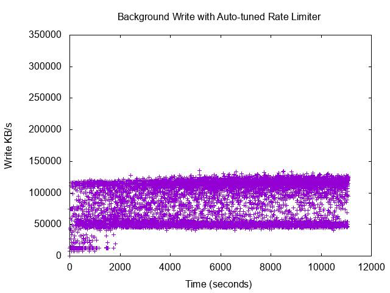
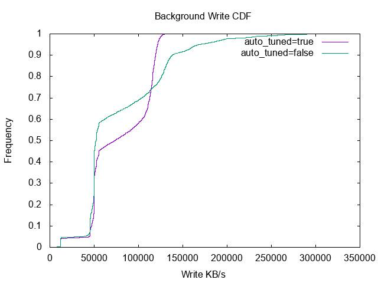

The write-cost assumption that quietly decides the data structure beneath distributed file system metadata
Ken Han, 2026
Metadata is the hidden database.
Imagine you've stored a bunch of stuff on a drive: files, directories, tables, whatever. Physically it's all just a long run of 0s and 1s sitting on the disk. But how do you actually read any of it back? Given that wall of bits, where does the thing you want start, where does it end, where does it even live? You need some kind of side note that records all of this. That side note, the part that's about the data but isn't the data itself, is metadata.
Metadata is much smaller than the actual data, but it's surprisingly hard to manage well. A few things make it tricky.
The first is just how much of it there is. Each entry is tiny, but anything you want to attach to a piece of data needs its own metadata, so the entries pile up fast.
The second is that metadata keeps changing, often when the data itself never moves. Rename a file, add a link, change its permissions, update a read timestamp. None of these touch the data, but every one of them rewrites metadata.
There's also how it gets read. Sometimes you want a single entry (point lookup), but just as often you want a whole range of them at once, like listing everything under a directory. And these accesses tend to cluster: touch one directory and you usually end up touching everything inside it.
So metadata ends up being a strange kind of workload. It's written to constantly, but it still has to answer both kinds of reads quickly. How you store something like that is what this whole piece is really about.
It's tempting to just throw each piece of metadata into a hash table. Whenever we need a key, we get it back in (average) constant time. Done.
But recall what metadata actually demands: we often need a whole bunch of related entries at once. On a hash table, that kind of range query means scanning the entire table to find every key in the range, because a hash table deliberately scrambles the order of keys, so neighbors end up in unrelated slots.
So how do we support range queries, and still keep a single-key lookup down to log-level complexity?
Range queries come for free: locate the start key, then keep reading forward until the end of the range. And a single lookup is O(log N) with binary search.
The problem is writing. Inserting or deleting a key means shifting the entire array to keep it in order. For metadata, which is written to constantly, that's a dealbreaker.
So we switch to a tree (a binary search tree). An insert, delete, or update now stays within O(log N), and it only disturbs the few nodes around the key instead of rewriting everything.
But a binary tree still isn't good enough. Under the Big-O lens both a 5-level and a 20-level traversal are just O(log N), which makes them look interchangeable on paper. In reality, the 20-level one costs about 4× the disk latency, because every level you go down is one more disk access you have to wait for. The tree's height is, in effect, the number of I/Os per lookup. So if we want faster lookups, we need a shorter tree.
This interactive page: Disk access animation will break down the cost of accessing the disk. Specifically, random writing latency vs. sequential writing latency, a difference that matters so much both B-Trees and LSM-Trees have to design around it.
How? The slow part of each step is fetching a block from disk, and that cost barely changes with how much the block holds. Whether it's 4 bytes or 4 KB, it's roughly the same fetch. So the idea is simple: pack as much as possible into each block. We go from 2-way branching (binary) to n-way branching, the B-Tree. (Why does a node holding M keys still count as one I/O? Because a node is a block, and reading one block is one I/O.) With M keys per node instead of 2, the height shrinks from log2(N) to logM(N), often just three or four levels to the bottom, so three or four disk accesses
The price shows up on writes. To update a key, we have to go to the exact block where it lives and rewrite it in place. That block sits at some arbitrary spot on disk, so every update pays the full random-I/O tax: a seek, a rotation, a read-then-write. One update, one random round-trip. When writes are the bottleneck, as they are for metadata, paying that on every single write is what hurts. And that's the assumption the next generation of structures refuses to accept.
The B-Tree was the right answer for a long time. Then three of the assumptions it was built on quietly stopped holding, and the ground moved under it.
1. The hardware changed. The old assumption was that storage behaves like a spinning disk, where the real cost is the seek and the structure should be designed around avoiding it. Flash broke that assumption from both sides at once. On one side, Flash needs no physical movement, so reaching a piece of data is far cheaper than before, which quietly erases much of B-Tree's old read advantage of minimizing seeks. On the other side, Flash can't overwrite just the bytes you want: the smallest unit it can rewrite is an entire block, so changing anything means erasing and rewriting a whole block. That amplifies every in-place update and wears the drive down faster, turning B-Tree's update-in-place into its most expensive operation. So the same shift makes B-Tree's strength less special and its weakness more painful, and as Flash becomes the default storage everyone designs for, the case for a structure that never updates in place gets much stronger.
2. The workload changed. The old assumption was that reads vastly outnumber writes, so it made sense to optimize for reads even if writes paid for it. Yet in modern systems there is more and more metadata. When a user buys something, for example, we don't just want the order details. We also want to know their behavior: how long they stayed on the previous page, what their browsing history on the site looks like. All of that data needs its own metadata too, and as that metadata piles up the write load grows heavier. So the willingness to trade away part of read performance for much better write performance keeps growing.
3. The scale changed. The old assumption was that everything fits on one machine. Once the data outgrows a single node, it gets spread across many machines and, crucially, copied onto several of them so a single failure doesn't lose it. That replication is what makes in-place updates expensive at scale: an in-place update modifies an existing record, so every replica of that record has to be brought in line with the change, turning one local rewrite into a round of cross-node coordination. Append-only writes sidestep this. Because each node's data is just an ordered log of new records, a replica stays in sync simply by replaying that log in order, no per-update negotiation required. A structure built on sequential, append-only writes happens to be exactly what replication at scale wants.
I strongly recommend you to try Interactive webpage after finishing the LSM-Trees reading; this interactive page makes everything so easy to understand.
B-Trees are good in many ways. One of the biggest is that they only take log(N) time complexity to locate the target key, which significantly improves read performance.
However, their primary drawback lies in write operations. On traditional hard drives, every key update requires traversing the tree to a specific disk location, resulting in a random I/O read-before-write operation—which is significantly slower than sequential I/O.
Even with the transition to flash storage, the challenge persists in the form of write amplification. Because the smallest alterable unit in flash memory is a block, updating a single key forces the entire block containing that target data to be rewritten. This not only degrades performance but also shortens the lifespan of the flash drive due to its finite write/erase (P/E) cycles.
To address this issue, here comes the LSM-Tree, whose philosophy is to rely on sequential writing to gain write performance at the cost of slower read performance.
The very first iteration of an LSM-Tree is to write everything sequentially. Putting (creating) a new key-value pair is straightforward. But then a problem appears: how do we update and delete an existing key?
The next iteration keeps the LSM-Tree's sequential philosophy. When doing an update, we directly write another put record; when doing a delete, we write a tombstone indicating the key is deleted, just like how we did a create. So the reader just needs to scan the records backward to see the latest value.
But another problem appears: what about space? As the records pile up, a single disk page won't be able to store all the historical data.
That is when the third iteration kicks in: SSTables and a compaction strategy.
An SSTable is essentially a smaller, consolidated version of the previous log. Compaction consolidates the keys, so eventually a key shows only one value (or one tombstone), one entry at a time.
Yet compaction is expensive, it involves both reading and writing, so it is deferred until necessary. As a result we end up with a bunch of SSTables. Each individual SSTable guarantees its keys are unique, but the same key can still be duplicated across different SSTables. So in the worst case the reader still has to browse through all SSTables to find a key. Is it possible to somehow accelerate this?
The fourth version accelerates reading inside each SSTable by sorting the keys when doing compaction, which reduces the search inside a table to log(size of SSTable). This reflects the naming of the SSTable: Sorted String Table.
A nice side effect: because each SSTable is now individually sorted, merging several of them during compaction becomes a single linear merge-sort pass over already-sorted runs, rather than a sort from scratch.
Even so, the cost of compaction is still a concern. Repeatedly compacting overlapping tables means rewriting the same data over and over again, which further wears down the physical drive's life. Plus the space efficiency is still not good enough, we are still wasting space on duplicate keys across SSTables.
How do we improve compaction? you might ask. The fifth version comes in: layering.
Now imagine that on top of all these SSTables, we keep the most recent records in an in-memory buffer (the memtable). Whenever it grows too large to keep in memory, we flush and consolidate it into an SSTable in the first layer.
Gradually, once we accumulate enough SSTables in the first layer, we consolidate them and flush down into the second layer, and the same happens for each following layer, all the way down to the bottom.
The key invariant that makes this work: within each layer (below the first), the SSTables cover non-overlapping key ranges. That is why a read needs to check at most one table per layer, and why compacting a table only touches the handful of overlapping tables in the layer below it, instead of everything at once.
These layers look like a pyramid: the top (first layer) holds the fewest SSTables while the bottom holds the most. This shape lets us do compaction gradually, rather than running one very expensive whole-database compaction once in a while.
There is still a bad reading case to improve: when a key doesn't exist at all, the reader may have to traverse every SSTable only to find nothing.
For this case we use a special data structure called a bloom filter. For each SSTable, every key is run through k hash functions, and each result sets a bit in a bit array. To test a search key, we hash it the same way and check the bits it would have set:
0, the key is definitely not in that SSTable, so we can quickly skip it.1, the key might be present, so we go check the table.That asymmetry is the whole point (and the special thing) about bloom filters: an "all bits set" match might just be a coincidence (a false positive), but a single 0 bit definitely proves the key is absent. There are no false negatives, and that one-directional guarantee is exactly what makes skipping safe.
This saves a lot of time that would otherwise be spent scanning through an SSTable for a key that isn't there.
RocksDB (developed by Meta, forked from Google's LevelDB) is the industry standard for implementing LSM-Trees. Aside from the essential features of LSM-Trees, its real engineering value lies in how it addresses the biggest operational challenges of the data structure: compaction overhead and write stalls.
In an LSM-Tree, incoming metadata is buffered in memory before being flushed to the first layer of SSTables and gradually compacted downward. However, memory and disk bandwidth are finite. When the frontend ingestion rate outpaces the backend flush or compaction speed, RocksDB faces a structural bottleneck. To prevent memory exhaustion or a massive read performance drop from too many overlapping files, the engine must freeze incoming frontend writes. This is a Write Stall, which causes severe spikes in latency [1].
Traditionally, operators rely on manually fine-tuning static parameters to balance background worker threads and threshold triggers. But static configurations inevitably fail under unpredictable production traffic spikes.
To solve this, RocksDB introduced an Auto-tuned Rate Limiter algorithm [2]. Instead of hard-stopping writes when thresholds are breached, the engine adopts a proactive traffic-shaping strategy. It continuously monitors backend pressure and automatically introduces small, artificial delays into the frontend write requests. This forces the frontend to slow down early, trading peak burst speed for predictable, sustained throughput.
This dynamic pacing is clearly demonstrated in RocksDB’s experimental data:

Real-time background write rate under auto-tuning, stabilizing within a strict 50–125 MB/s band after an initial adaptation phase.

CDF of the write rate. The steep, vertical curve under auto-tuning (purple) proves the system ensures a highly stable compaction write speed.
The engineering takeaway here is clear: predictable stability outweighs unmanaged peak performance. By suppressing temporary throughput spikes, RocksDB eliminates the violent performance cliffs of traditional LSM-Trees and guarantees stable frontend latencies.
So far we've walked through the mainstream data engines used for metadata access, and seen how the assumption shifts tilt the field toward LSM-Trees over B-Trees. But does that mean an LSM-Tree is simply the next version of the B-Tree?
Not quite. Even after all those shifts, B-Trees keep a few things that are genuinely hard to replace:
This is why single-node relational databases and filesystems, like MySQL (InnoDB), PostgreSQL, or Linux's XFS, still rely firmly on B-Trees.
In the end, the right choice still comes down to the developer's judgment and the actual workload in front of them.
[1] RocksDB Wiki. "Write Stalls." https://github.com/facebook/rocksdb/wiki/Write-Stalls
[2] RocksDB Blog. "Auto-tuned Rate Limiter." https://rocksdb.org/blog/2017/12/18/17-auto-tuned-rate-limiter.html